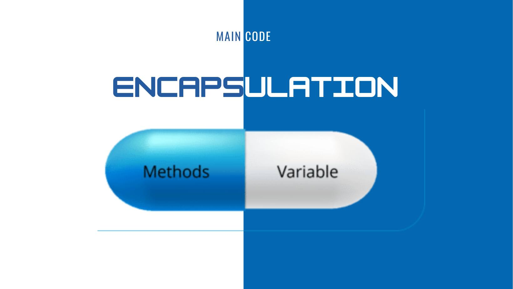

Encapsulation (Part 1)
🔰Sau bài viết thứ nhất, Main Code xin giới thiệu mọi người tới tính chất đầu tiên của OOP là Encapsulation aka Tính đóng gói.
🧑💻Tính đóng gói là một trong những tính chất quan trọng trong OOP mà developer cần nắm vững. Vậy:
Tính đóng gói(Encapsulation) là gì?
Lợi ích của đóng gói trong Java?
============================
Tính đóng gói – kỹ thuật ẩn giấu thông tin không liên quan và hiện thị ra thông liên quan. Nghe có vẻ hơi trừu tượng, nhưng để dễ hình dung, hãy tưởng tưởng, bạn đang gửi 1 tài khoản tiết kiệm, bạn không muốn ai truy cập hay đụng vào tài khoản tiết kiệm trừ bạn, đó là lúc Tính đóng gói - Encapsulation xuất hiện.
📍Làm sao để đạt được tính đóng gói nhỉ? :
Thực ra, bạn chỉ cần chuẩn bị 2 thứ thôi:
1. Từ khóa thần thánh private, bạn cần khai báo các biến của một lớp là private.
2. Cung cấp phương thức setter và getter là public để có thể sửa đổi và xem các giá trị biến.
=> Chỉ thế thôi là tiền của bạn sẽ an toàn rồi đấy 🤗
📍Ủa vậy trong JAVA thì lợi ích của đóng gói là gì nhỉ?
- Tất cả các trường (field) của lớp có có chế độ chỉ đọc (read-only) hoặc chỉ ghi (write-only), tức là chỉ có hàm getter hoặc setter.
- Một lớp có thể có toàn bộ điều khiển thông qua những gì được lưu giữ trong các trường (field) của nó.
- Người sử dụng của class không biết cách các class lưu trữ dữ liệu. - Một class có thể thay đổi kiểu dữ liệu của một trường và người dùng class không cần sự thay đổi trong code.